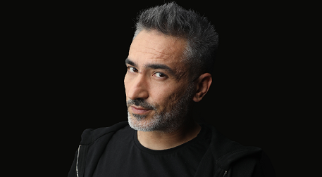

Sagopa Kajmer KİMDİR?
Sagopa Kajmer, gerçek adı Yunus Özyavuz'dur. 17 Ağustos 1978 tarihinde Samsun'da dünyaya gelmiştir.
Yunus Özyavuz; ilk olarak "DJ MIC CHECK" adıyla ve daha sonrasında "Silahsız Kuvvet" adıyla tanınmaya başlamıştır. Rap müzisyeni, müzik yapımcısı, söz yazarı ve de DJ olarak bilinir.
İlk olarak Samsun'da bir radyoda DJ'lik yaparak işe başlayan Yunus, üniversite eğitimi üzerine İstanbul'a geldi ve İstanbul Üniversitesinde Fars Dili ve Edebiyatı bölümünden mezun oldu.
1998 yılında Kuvvetmira isimli rap grubunu kuran Yunus, Silahsız Kuvvet mahlasıyla var olmaya başladı. 1999 yılında Türk Rap sanatçılarının çıkarmış olduğu Yeraltı Operasyonu albümünde yer aldı.
Daha sonrasında Sagopa Kajmer ismini kullanmaya başlayan Yunus Özyavuz, Sagopa Kajmer adında albümünü çıkarttı. 11 Ağustos 2005'te kendi plak şirketi Melankolia Müzik'i kurdu.
1 Ağustos 2006'da Esen Güler (Kolera) ile evlendi. 20 Kasım 2017 tarihinde ise yollarını ayırmaya karar verdiler.
Sagopa Kajmer gün geçtikçe daha yeni ve daha orijinal parçalara imza atmaktadır.